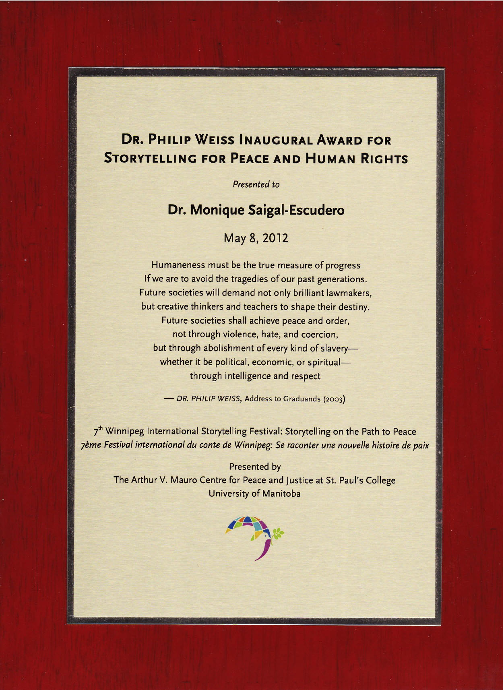
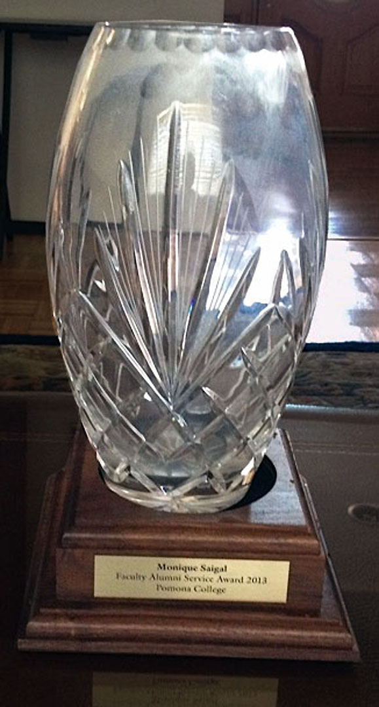
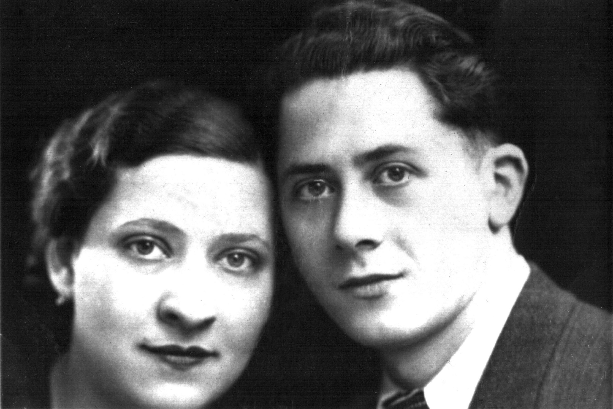
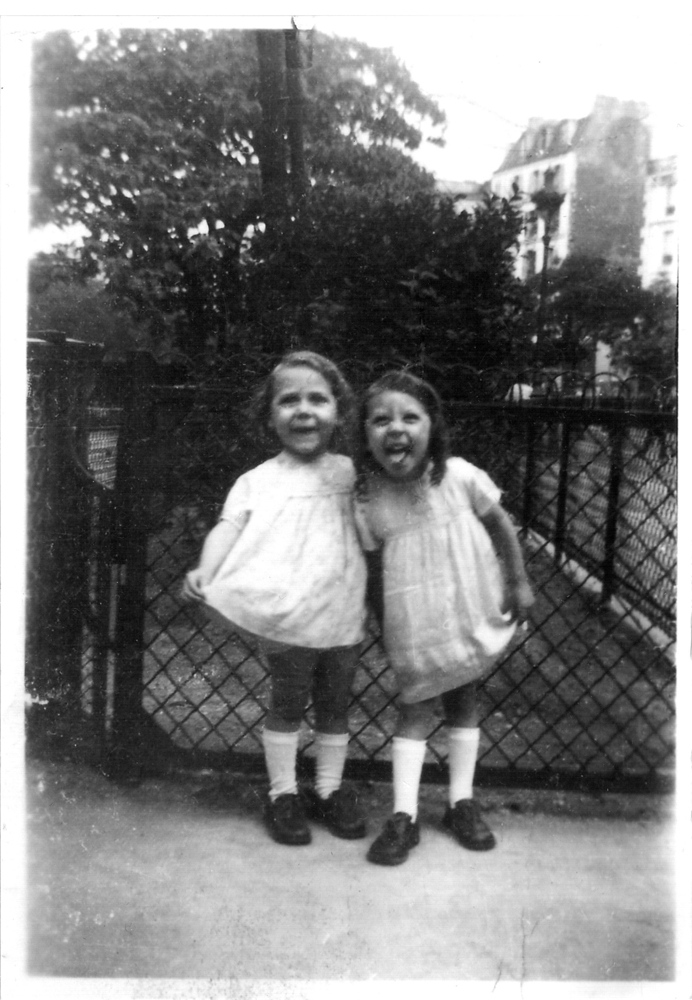
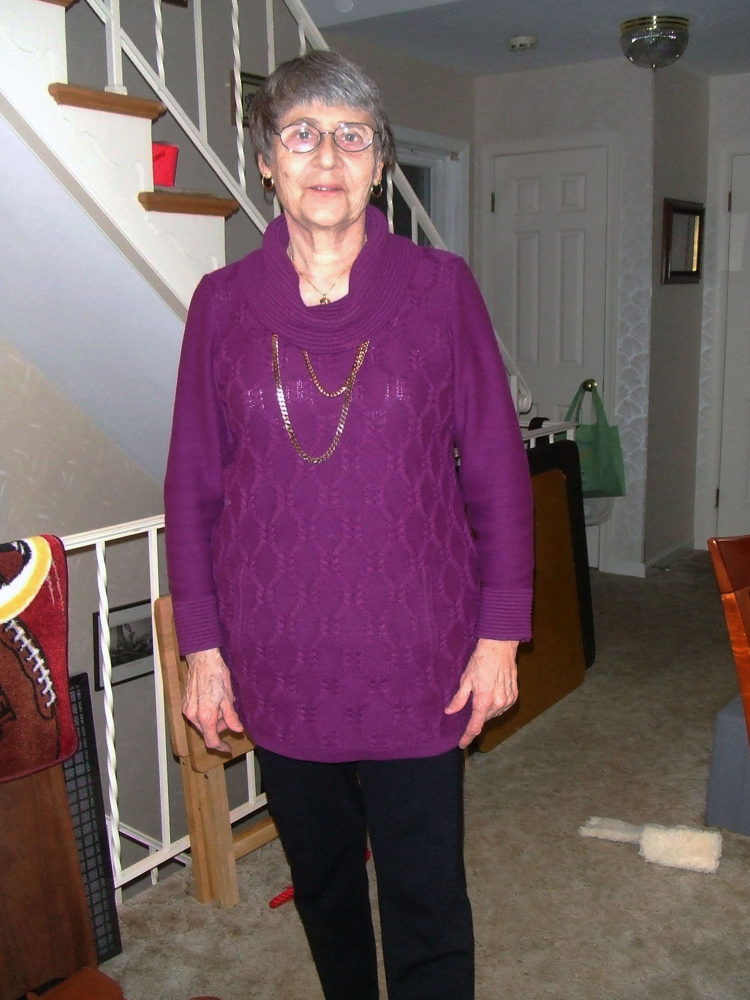
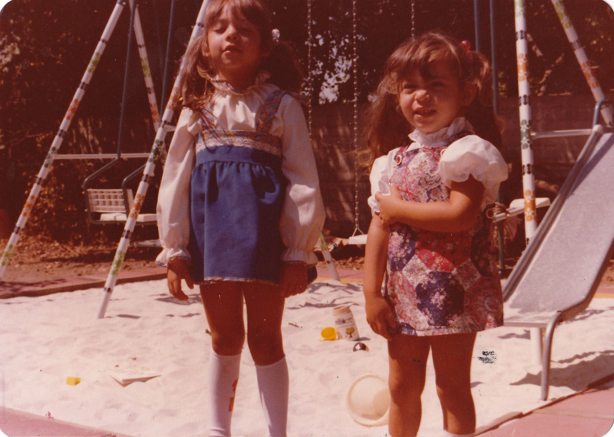
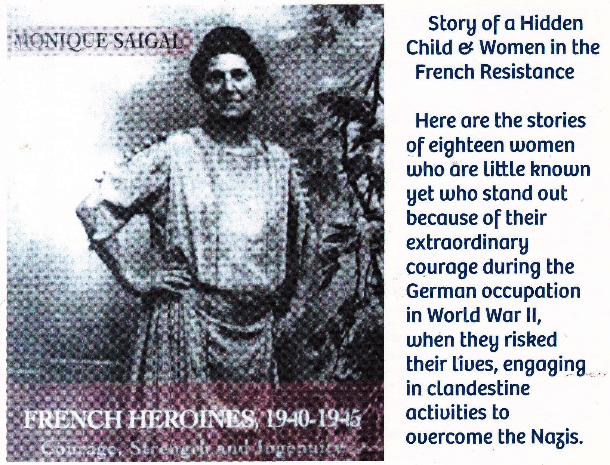
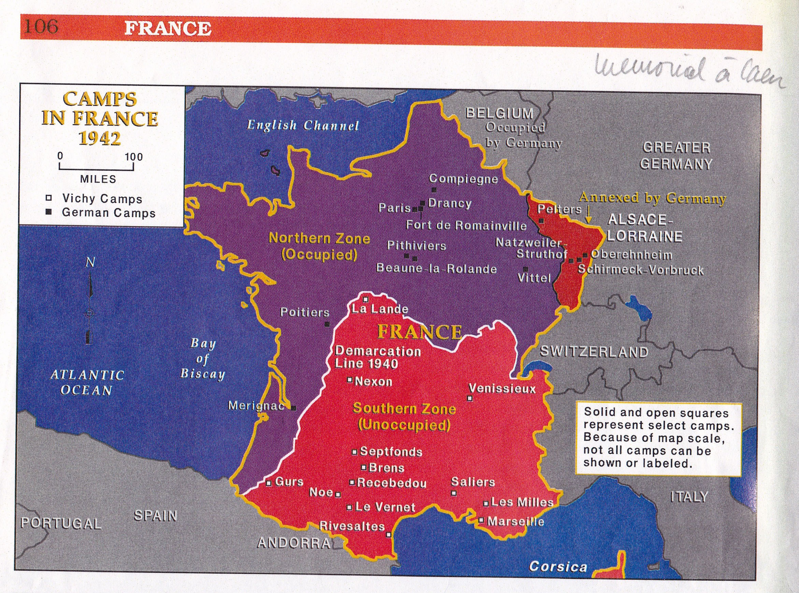

Dr. Philip Weiss Inaugural Award For Storytelling For Peace and Human Rights
"Given to Monique by Arthur V. Mauro Centre for Peace and Justice at St.Paul’s College, University of Manitoba, Winnipeg, Canada."
I spent a wonderful week in Winnipeg where I spoke to various students from the local middle schools, high schools, French school, and the University of Manitoba. Students and teachers were very welcoming and interested in the topic. It was a very fruitful visit.

Pomona College Alumni Award
When I received the Pomona College Alumni Award, I was extremely pleased because after teaching Spanish for 6 years as well French for 45 years I still keep in contact with the school and with many students, so it was wonderful to be recognized.

Mother and Father
My parents met at a dance in 1937. My father was born in Romania and was fluent in French because I discovered letters that he wrote to my mother during the war, in perfect French. My grandparents were born in Romania, but my mother was born in Marseilles, France.

Photo With Two Sisters, Monique and Jackie
I don’t exactly know when this picture was taken, but it was before August 26, 1942. Later, when my grandmother was taken to Auschwitz, my 19 year old uncle took care of my sister. A few weeks later, the Baleste family found a widow in a different village who accepted to raise her.

Jackie
My sister, Jackie, has been of great help to me when I decided to do research about our time as hidden children. She introduced me to many organizations that became interested in hearing and seeing what happened to us during the war.

Marilys and Jennifer
I love this picture of my two daughters, Marilys, the oldest and Jennifer, the youngest! They are now older and have been very supportive of my work. Marilys always accompanies me when I give my power point presentation if she is available.

The Story Card
This is the card Marilys designed for me when I started speaking about my story and my book. I am very grateful to her for all her continuous help.

The Story Card (back)
The back of the card shows the book that tells my story and the interviews about the women whom I filmed because they were active in the French Resistance. First written in French and published in France, it was translated into English and printed in the USA. The latest edition for both versions now has pictures and my story in the introduction.

France in 1942
This card shows how France was divided in two zones when Maréchal Pétain became the chief of state with all the powers. The northern zone was the occupied one and the southern one, the free zone until November 11, 1942 . Vichy where Pétain lived was located there.
{kind=link}
{kind=link}
{kind=link}
{kind=link}
{kind=link}
{kind=link}
{kind=link}
{kind=link}